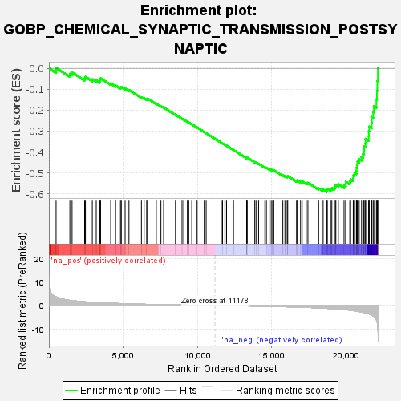
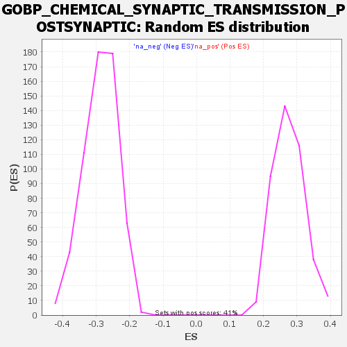

| | | Dataset | deseq_dnfgfr_res_for_gsea |
| Phenotype | NoPhenotypeAvailable |
| Upregulated in class | na_neg |
| GeneSet | GOBP_CHEMICAL_SYNAPTIC_TRANSMISSION_POSTSYNAPTIC |
| Enrichment Score (ES) | -0.5904774 |
| Normalized Enrichment Score (NES) | -2.0559447 |
| Nominal p-value | 0.0 |
| FDR q-value | 0.014679906 |
| FWER p-Value | 0.015 |
Table: GSEA Results Summary

Fig 1: Enrichment plot: GOBP_CHEMICAL_SYNAPTIC_TRANSMISSION_POSTSYNAPTIC
Profile of the Running ES Score & Positions of GeneSet Members on the Rank Ordered List
| SYMBOL | RANK IN GENE LIST | RANK METRIC SCORE | RUNNING ES | CORE ENRICHMENT | | 1 | Mtmr2 | 483 | 3.654 | 0.0015 | No |
| 2 | Tmem108 | 1411 | 2.175 | -0.0265 | No |
| 3 | Adrb2 | 1559 | 2.062 | -0.0200 | No |
| 4 | Unc13b | 2403 | 1.569 | -0.0481 | No |
| 5 | Pten | 2461 | 1.530 | -0.0409 | No |
| 6 | P2rx4 | 2921 | 1.342 | -0.0531 | No |
| 7 | Bdnf | 3186 | 1.242 | -0.0571 | No |
| 8 | Grik1 | 3441 | 1.158 | -0.0612 | No |
| 9 | Nrxn1 | 3443 | 1.158 | -0.0538 | No |
| 10 | Celf4 | 3478 | 1.146 | -0.0480 | No |
| 11 | Cbln1 | 4161 | 0.950 | -0.0728 | No |
| 12 | Npff | 4488 | 0.871 | -0.0820 | No |
| 13 | Ntsr1 | 4818 | 0.791 | -0.0918 | No |
| 14 | Chrna3 | 4875 | 0.779 | -0.0894 | No |
| 15 | Chrna4 | 5130 | 0.722 | -0.0962 | No |
| 16 | Grk2 | 5389 | 0.665 | -0.1037 | No |
| 17 | Ppp3ca | 6227 | 0.521 | -0.1383 | No |
| 18 | Met | 6410 | 0.495 | -0.1433 | No |
| 19 | Tbc1d24 | 6580 | 0.465 | -0.1480 | No |
| 20 | Prkn | 6647 | 0.458 | -0.1481 | No |
| 21 | App | 6649 | 0.458 | -0.1452 | No |
| 22 | Igsf11 | 7230 | 0.376 | -0.1691 | No |
| 23 | Insyn2a | 7541 | 0.334 | -0.1810 | No |
| 24 | Npy2r | 7723 | 0.311 | -0.1872 | No |
| 25 | Neto2 | 8520 | 0.214 | -0.2219 | No |
| 26 | Gabrb3 | 8963 | 0.160 | -0.2409 | No |
| 27 | Rab3gap1 | 9077 | 0.148 | -0.2451 | No |
| 28 | Slc17a7 | 9323 | 0.134 | -0.2553 | No |
| 29 | Eif4a3 | 9414 | 0.123 | -0.2586 | No |
| 30 | Snca | 9617 | 0.101 | -0.2671 | No |
| 31 | Prkar1b | 9925 | 0.068 | -0.2806 | No |
| 32 | Hcrt | 9980 | 0.064 | -0.2826 | No |
| 33 | Prkcz | 10458 | 0.019 | -0.3041 | No |
| 34 | Stx1a | 10586 | 0.007 | -0.3098 | No |
| 35 | Eif4a3l1 | 11605 | -0.045 | -0.3557 | No |
| 36 | Rims1 | 11689 | -0.053 | -0.3591 | No |
| 37 | Drd4 | 11846 | -0.070 | -0.3657 | No |
| 38 | Adora1 | 11858 | -0.071 | -0.3658 | No |
| 39 | Grik2 | 11959 | -0.082 | -0.3698 | No |
| 40 | Mef2c | 12427 | -0.108 | -0.3902 | No |
| 41 | Mecp2 | 13312 | -0.206 | -0.4290 | No |
| 42 | Ssh1 | 13316 | -0.206 | -0.4278 | No |
| 43 | Wnt7a | 13317 | -0.206 | -0.4265 | No |
| 44 | Glra1 | 13350 | -0.210 | -0.4266 | No |
| 45 | Gsk3b | 13858 | -0.257 | -0.4479 | No |
| 46 | Grin2a | 13944 | -0.267 | -0.4501 | No |
| 47 | Zmynd8 | 14117 | -0.288 | -0.4560 | No |
| 48 | Adrb1 | 14538 | -0.347 | -0.4728 | No |
| 49 | Rims2 | 14641 | -0.357 | -0.4751 | No |
| 50 | Ngfr | 14829 | -0.383 | -0.4812 | No |
| 51 | Grid2 | 14965 | -0.405 | -0.4847 | No |
| 52 | Slc8a3 | 15060 | -0.422 | -0.4862 | No |
| 53 | Reln | 15139 | -0.433 | -0.4870 | No |
| 54 | Nlgn1 | 15748 | -0.526 | -0.5112 | No |
| 55 | Pclo | 15889 | -0.547 | -0.5140 | No |
| 56 | Cx3cl1 | 16040 | -0.572 | -0.5172 | No |
| 57 | Baiap2 | 16078 | -0.580 | -0.5151 | No |
| 58 | Cacnb3 | 16671 | -0.685 | -0.5376 | No |
| 59 | Ckap5 | 16722 | -0.694 | -0.5354 | No |
| 60 | Cdk5 | 16940 | -0.740 | -0.5405 | No |
| 61 | Abat | 17048 | -0.762 | -0.5404 | No |
| 62 | Cntnap2 | 17324 | -0.824 | -0.5476 | No |
| 63 | Igsf9b | 17437 | -0.850 | -0.5472 | No |
| 64 | Afdn | 18158 | -1.044 | -0.5732 | No |
| 65 | Tmem25 | 18459 | -1.147 | -0.5794 | No |
| 66 | Rgs4 | 18704 | -1.237 | -0.5825 | Yes |
| 67 | Dgki | 18743 | -1.250 | -0.5762 | Yes |
| 68 | Grin2b | 18961 | -1.332 | -0.5775 | Yes |
| 69 | Lrrk2 | 19046 | -1.370 | -0.5726 | Yes |
| 70 | Slc29a1 | 19203 | -1.425 | -0.5705 | Yes |
| 71 | Begain | 19276 | -1.463 | -0.5644 | Yes |
| 72 | Mapk8ip2 | 19317 | -1.480 | -0.5567 | Yes |
| 73 | Ppp1r9a | 19484 | -1.562 | -0.5542 | Yes |
| 74 | Npas4 | 19868 | -1.781 | -0.5601 | Yes |
| 75 | Stx1b | 19983 | -1.829 | -0.5536 | Yes |
| 76 | Dvl1 | 19987 | -1.831 | -0.5420 | Yes |
| 77 | Grip2 | 20256 | -1.995 | -0.5413 | Yes |
| 78 | Chrna7 | 20311 | -2.032 | -0.5307 | Yes |
| 79 | Neto1 | 20488 | -2.201 | -0.5246 | Yes |
| 80 | Nlgn3 | 20503 | -2.211 | -0.5111 | Yes |
| 81 | Ptk2b | 20576 | -2.277 | -0.4997 | Yes |
| 82 | Dlg4 | 20700 | -2.399 | -0.4899 | Yes |
| 83 | Atxn1 | 20704 | -2.404 | -0.4746 | Yes |
| 84 | Dbn1 | 20755 | -2.474 | -0.4610 | Yes |
| 85 | Shank1 | 20776 | -2.495 | -0.4459 | Yes |
| 86 | Oprm1 | 20887 | -2.609 | -0.4342 | Yes |
| 87 | Sh3gl1 | 21046 | -2.807 | -0.4233 | Yes |
| 88 | Grin2c | 21149 | -2.949 | -0.4090 | Yes |
| 89 | Grik5 | 21209 | -3.012 | -0.3924 | Yes |
| 90 | S1pr2 | 21218 | -3.021 | -0.3734 | Yes |
| 91 | Dmpk | 21316 | -3.196 | -0.3573 | Yes |
| 92 | Cux2 | 21320 | -3.201 | -0.3369 | Yes |
| 93 | Anks1b | 21525 | -3.565 | -0.3233 | Yes |
| 94 | Slc8a2 | 21536 | -3.586 | -0.3007 | Yes |
| 95 | Insyn1 | 21564 | -3.646 | -0.2786 | Yes |
| 96 | Ghrl | 21728 | -4.119 | -0.2595 | Yes |
| 97 | Grin1 | 21738 | -4.158 | -0.2333 | Yes |
| 98 | Grin2d | 21828 | -4.505 | -0.2084 | Yes |
| 99 | Adora2a | 21874 | -4.675 | -0.1805 | Yes |
| 100 | Mpp2 | 22046 | -6.127 | -0.1489 | Yes |
| 101 | Shank3 | 22081 | -6.739 | -0.1072 | Yes |
| 102 | Sez6 | 22110 | -7.497 | -0.0604 | Yes |
| 103 | Nlgn2 | 22148 | -9.797 | 0.0007 | Yes |
Table: GSEA details [plain text format]

Fig 2: GOBP_CHEMICAL_SYNAPTIC_TRANSMISSION_POSTSYNAPTIC: Random ES distribution
Gene set null distribution of ES for GOBP_CHEMICAL_SYNAPTIC_TRANSMISSION_POSTSYNAPTIC